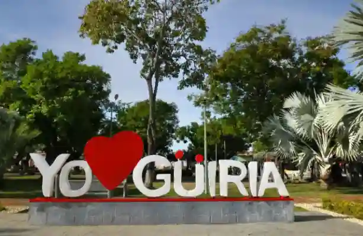
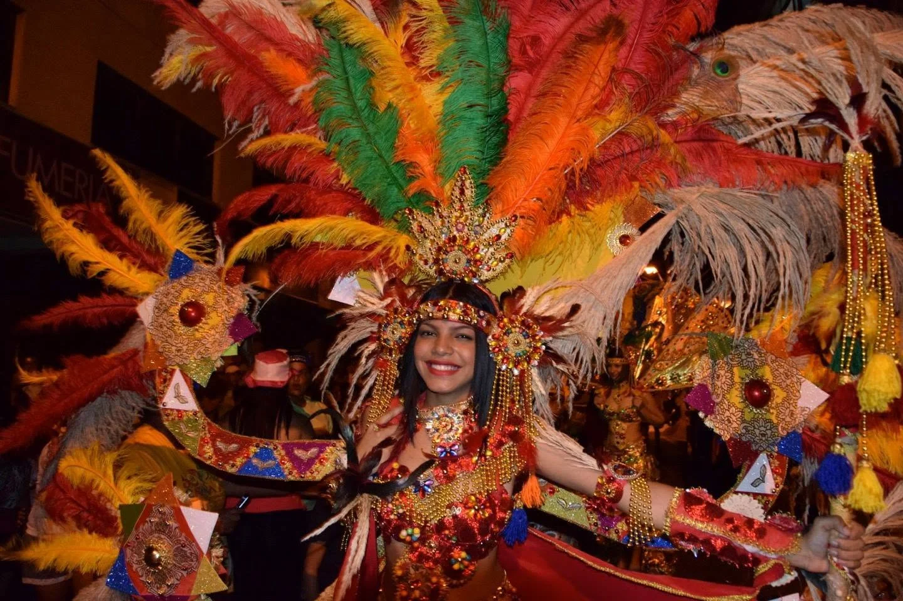

Discover Güiria
Güiria is a beautiful coastal town in Venezuela, known for its stunning beaches, rich culture, and delicious cuisine. Explore our website to learn more about what Güiria has to offer!

Cultural Sites
Güiria is home to a variety of cultural sites that showcase the town's rich history and heritage. From historical landmarks to local festivals, there's something for everyone to enjoy.
